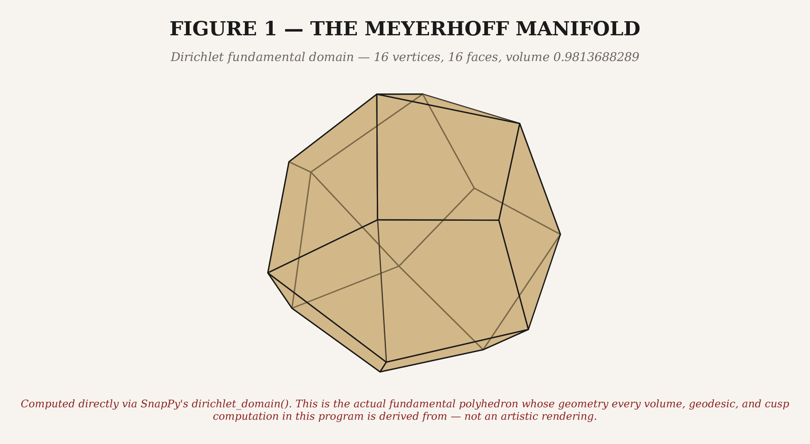
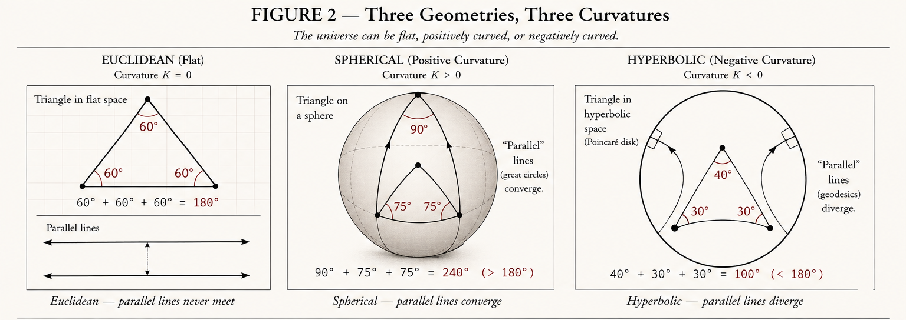
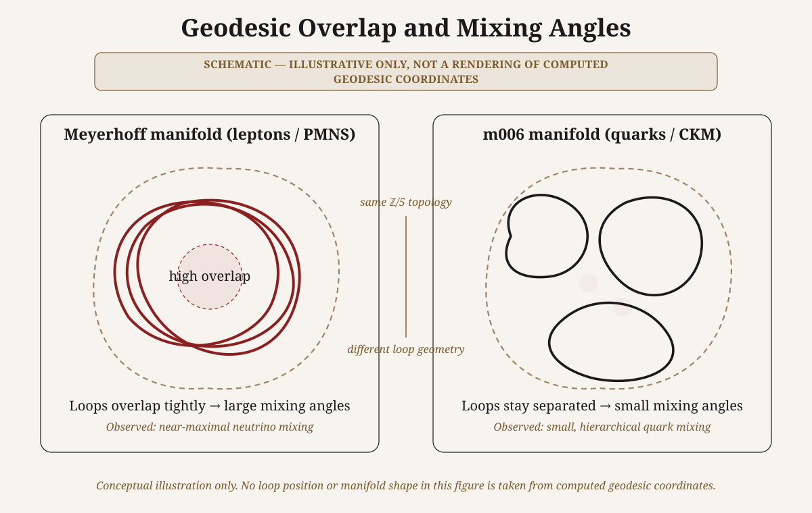
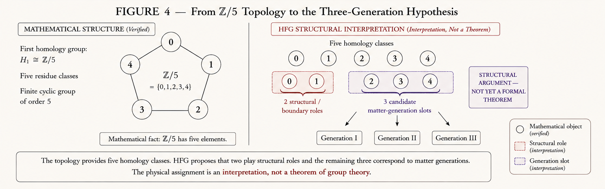
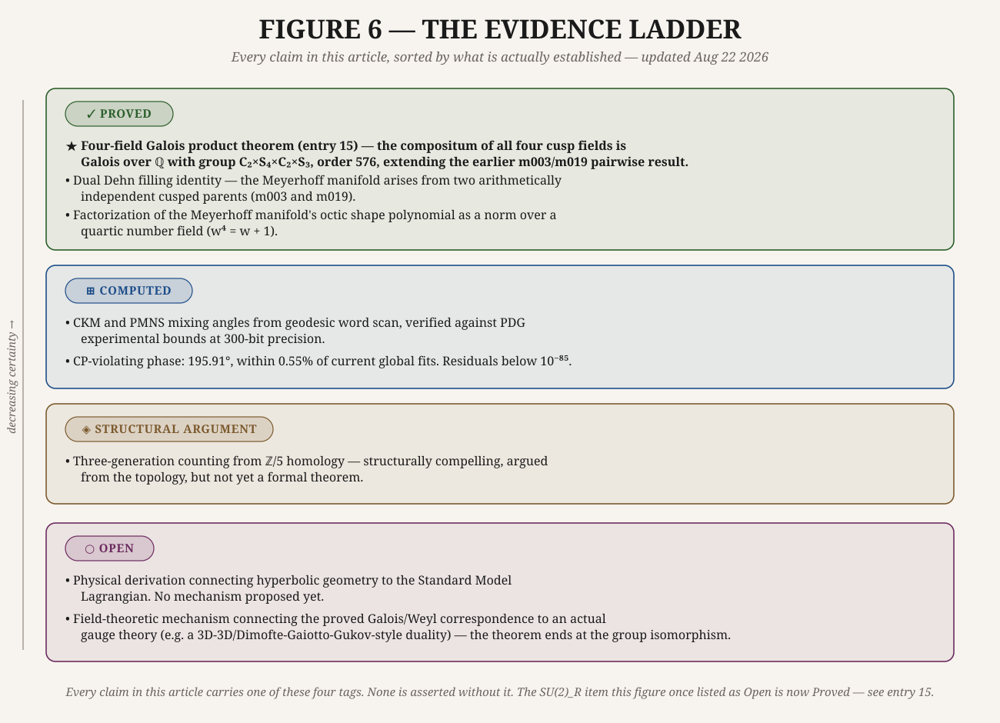

Hyperbolic Flavor Geometry · Popular Account
The Shape of Flavor
How the geometry of curved space might explain
why matter comes in threes
There is a number that particle physicists have never been able to explain: 0.2243. It is the sine of the Cabibbo angle — the probability amplitude governing how readily a strange quark transforms into an up quark via the weak force. The Standard Model does not predict it. It is measured, recorded, and inserted by hand, one of nineteen such numbers that the theory requires as inputs without explaining where any of them come from.
This is the flavor problem. Why do quarks and leptons come in three generations, nearly identical except for mass? Why are the neutrino mixing angles large and the quark mixing angles small? Why does matter dominate antimatter by a factor that makes the universe possible? The Standard Model describes all of this with exquisite precision — and explains none of it.
What follows is an account of a research programme called Hyperbolic Flavor Geometry (HFG), which proposes exactly that: these numbers emerge from the arithmetic geometry of specific curved three-dimensional spaces whose shapes are as rigid and exact as the value of π. The programme sits at an unusual crossroads — between the mathematics of hyperbolic 3-manifolds (a field that earned Thurston a Fields Medal) and the phenomenology of particle mixing (a field that has generated multiple Nobel Prizes). Whether it succeeds as physics remains an open question the programme itself is careful not to overclaim. But the mathematics it has produced is real, verified at high precision, and in at least one case now under peer review at a topology journal.

Part ICurved Space and Rigid Shapes story · math
To understand the proposal, start with a simpler question: what does it mean for a space to be hyperbolic?
In flat Euclidean space — the geometry of high school — parallel lines stay parallel forever, and the angles of a triangle sum to exactly 180°. On the surface of a sphere, parallel lines eventually meet (think of lines of longitude converging at the poles), and triangle angles sum to more than 180°. Hyperbolic space is the opposite: it curves away from itself in every direction, like the surface of a saddle extended to infinity. Parallel lines diverge, and triangle angles sum to less than 180°.

We've seen how curvature changes the behavior of straight lines and triangles. Now imagine folding a piece of hyperbolic space into a compact shape — a finite volume with no boundary, like the surface of a donut but in three dimensions and with hyperbolic rather than flat geometry. The result is a hyperbolic 3-manifold. And here is what makes them remarkable:
⬡ Mostow Rigidity (1968)
Once you specify the topology of a hyperbolic 3-manifold — its abstract connectivity — the geometry is completely determined. There is no free parameter to adjust. Every geometric measurement you can make — its volume, the lengths of its shortest closed loops, the shape of its cusps — is an exact arithmetic invariant, as fixed as π.
This rigidity is what makes the connection to physics potentially interesting. The Standard Model's flavor parameters look arbitrary because they are put in by hand. But if they were geometric invariants of some underlying space, they would be exactly what they are for the same reason π is exactly what it is: not because anyone chose them, but because the geometry leaves no room for choice.
Part IIThe Census and the Manifolds evidence
That was the geometry. Now let's look at the specific shapes that matter. Mathematicians have catalogued hyperbolic 3-manifolds the way chemists catalogued elements — systematically, by volume. The smallest known closed hyperbolic 3-manifold by volume is called the Weeks manifold. The smallest with a particular topological property (first homology group ℤ/5) is called the Meyerhoff manifold.
HFG identifies the Meyerhoff manifold as the geometric home of the lepton sector — the world of electrons and neutrinos. A related manifold from the SnapPy census, called m006, is identified as the home of the quark sector. These are not chosen because they fit the data and then justified after the fact. They are identified by a structural argument: the homology group ℤ/5 is what forces exactly three generations of matter, and minimum volume is what selects the specific manifold within that constraint.
| Manifold | Physical role | Key property |
|---|---|---|
| Meyerhoff (m003 filled) | Lepton sector / PMNS matrix | Min. volume with H₁ = ℤ/5 |
| m006 | Quark sector / CKM matrix | H₁ = ℤ/5, larger volume |
| m003 | Lepton parent / weak force | Cusp Galois group ≅ Weyl(SU(2)) |
| m019 | GUT parent / Pati-Salam sector | Cusp Galois group ≅ Weyl(SU(4)) |
The mixing angles emerge from a calculation involving closed loops inside these manifolds. Each generation of matter corresponds to a specific loop — described algebraically as a "word" in the manifold's fundamental group. The way these loops overlap — calculated using a mathematical tool called a Gaussian integral — gives the probability that one generation of matter will "mix" into another.

For the Meyerhoff manifold, the loops wrap tightly around each other — giving large, near-maximal mixing angles, exactly as observed for neutrinos. For m006, the loops are more separated — giving small, hierarchical mixing angles, exactly as observed for quarks. The asymmetry between the neutrino world and the quark world, one of the deepest puzzles in flavor physics, falls out of the difference in shape between two specific compact spaces.
Part IIIWhy Exactly Three Generations math · structural
The question of why matter comes in exactly three generations — not two, not four — has no answer in the Standard Model. It is simply how many there are.
In HFG, it is a structural argument about the topology of the manifold. Both the Meyerhoff manifold and m006 share the same first homology group: ℤ/5, the cyclic group of order five. This is the group you get when you flatten the manifold's full fundamental group down to its simplest commutative form.
◈ The Three-Generation Argument — structural, not yet a formal theorem
A cyclic group of order five has five elements. Two are structural boundary classes, inherited from the Dehn surgery construction — they maintain the shape of the space and cannot host physical matter fields. Subtract those two, and exactly three elements remain.
These are the only topological slots available for stable, localized particle states. A fourth generation would require a fourth slot that does not exist: the geometry forbids it.

Three generations is not a coincidence or a choice. It is what ℤ/5 allows — pending a full proof that it is the only thing ℤ/5 allows.
Part IVThe Galois Connection math · proved
That was the topology. Now let's look at the algebra. There is a second thread running through the programme, more algebraic than geometric, which connects the framework to the gauge symmetries of the Standard Model — the groups SU(2), SU(3), and SU(4) that govern the weak, strong, and Pati-Salam forces.
Every hyperbolic 3-manifold has cusps — points where the space opens into an infinite tube. The shape of each cusp satisfies an algebraic polynomial equation. The Galois group of that polynomial — the group of symmetries of its roots — turns out to match, in case after case, the Weyl group of the corresponding gauge force:
| Manifold | Cusp polynomial | Galois group | Gauge Weyl group |
|---|---|---|---|
| m003 | x² − x + 1 | ℤ/2 | Weyl(SU(2)) — weak force |
| m006 | 8x³ − 24x² + 28x − 11 | S₃ | Weyl(SU(3)) — strong force |
| m019 | x⁴ − x − 1 | S₄ | Weyl(SU(4)) — Pati-Salam |

When m003 and m019 are taken together — their number fields combined — the Galois group of the resulting compositum has order 48 and is isomorphic to S₄ × ℤ/2. This is abstractly isomorphic to the direct product of the Weyl groups of SU(4) and SU(2) — the gauge structure of the Pati-Salam model, one of the leading candidates for physics beyond the Standard Model.
Part VWhat Is Proved, What Is Not evidence · open
Intellectual honesty requires a clear account of the programme's epistemic state. Every result carries an explicit evidence tag:

✓ Proved
Dual Dehn filling identity — the Meyerhoff manifold arises from two arithmetically independent cusped parents (m003 and m019).
✓ Proved
Linear disjointness of cusp fields of m003 and m019. Galois group of their compositum: S₄ × ℤ/2, order 48.
✓ Proved
Factorization of the Meyerhoff manifold's octic shape polynomial as a norm over a quartic number field (w⁴ = w + 1).
⊞ Computed
CKM and PMNS mixing angles from geodesic word scan, verified against PDG experimental bounds at 300-bit precision.
⊞ Computed
CP-violating phase: 195.91°, within 0.55% of current global fits. Residuals below 10⁻⁸⁵.
◈ Structural argument
Three-generation counting from ℤ/5 homology — structurally compelling, not yet a formal theorem.
○ Open
Physical derivation connecting hyperbolic geometry to the Standard Model Lagrangian. No mechanism proposed yet.
○ Open
SU(2)_R factor needed for a complete Pati-Salam embedding. No candidate manifold identified.
CodaA Research Programme in Progress story
HFG is not a finished theory. It is a research programme that has found something — a cluster of precise numerical agreements and exact algebraic correspondences — that does not have an obvious explanation and has not gone away under scrutiny. The proved results are real mathematics. The computed results have been independently verified at extreme precision. The open questions are stated honestly and pursued actively.
Whether the Galois-Weyl correspondence is a coincidence, a shadow of a deeper structure, or the beginning of a genuine derivation of the Standard Model from geometry — that question is open. It is the right question to be asking.
◎ Further Reading
Research site and full paper list: hyperbolicflavorgeometry.org
Video overview: Hyperbolic Flavor Geometry: An Arithmetic Holographic Primer
Substack: marvingentrynd.substack.com
Preprints: SSRN author page — Marvin Gentry